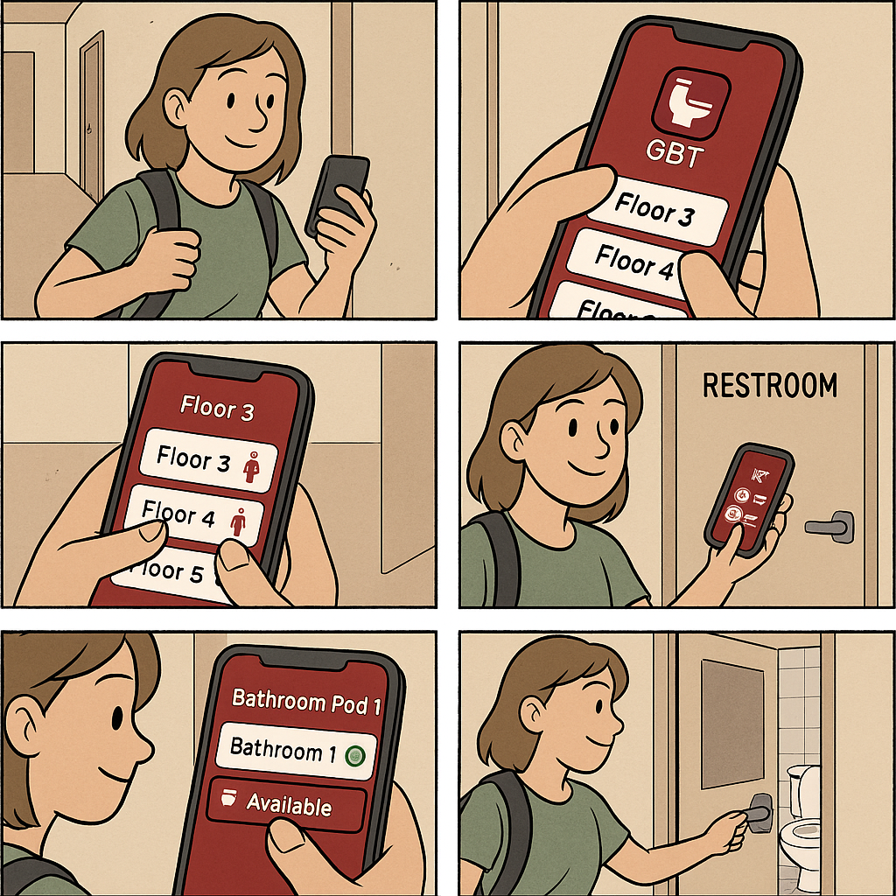

Highlighted projects
Problem Statement

Although the communal bathrooms are cleaned daily during the week, some bathrooms tend to get dirtie/messier than others, and because of this, it makes it very hard to determine which bathrooms are cleaner than others and better to use.
Affinity Diagram
An affinity diagram representing the possible implications of a mobile app being created in relation to my problem statement. It considers ideas such as how the user will provide feedback, who will be able to use, some basic features of it, etc.
Sketches
There are three sketches with one consisting of a general look for the app, one being a scenario when a student uses the app, and one being when a custodian uses the app.